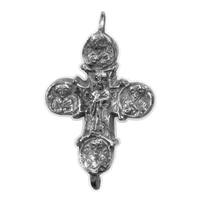
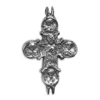

Catalog › CE-0570 · MET2026-754082
Relicvar-cruce pandantiv de argint și argint aurit, Met 2018.870.1a–c
sec. XII–XIV (1101–1400) · loc necunoscut · The Metropolitan Museum of Art, New York, inv. 2018.870.1a–c
double-sided reliquary cross (enkolpion), argint; c. XII–XIV (1101–1400); find spot unknown; kept at The Metropolitan Museum of Art, New York.




Identificare
- Categorie
- Encolpion bivalv (relicvar)
- Material
- Argint
- Tehnică
- Aurire
- Dimensiuni
- Î 58 × L 36 × Gr 12 mm
Datare și atribuire
- Datare
- sec. XII–XIV (1101–1400)
Descoperire
- Context
- Colecție (fără context)
- Coordonate
- 40.7794° N, -73.9632° E
- Precizia locului
- Loc de păstrare (loc de descoperire incert)
Păstrare și referințe
- Colecție
- The Metropolitan Museum of Art, New York
- Nr. inventar
- 2018.870.1a–c
- Bibliografie
- Pendant Cross Reliquary (2018.870.1a–c), The Metropolitan Museum of Art, Open Access (CC0), date din Met Collection API, înregistrare actualizată 2025-12-18. https://www.metmuseum.org/art/collection/search/754082 ; https://collectionapi.metmuseum.org/public/collection/v1/objects/754082 [accesat 17.10.2026] Credit: Gift of Ronald R. Atkins, 2018.
- Observații
- Cultură: „Byzantine or early Russian (?)” (sursa). Argint și argint aurit. Obiectul are trei părți: a = medalion pe lanț, b și c = cele două valve ale crucii pandantiv; dimensiuni cruce (b+c) 5,8 × 3,6 × 1,2 cm; valva b 0,7 cm grosime, valva c 0,8 cm; lanț cu medalion 31 × 2,1 × 1,3 cm. În fotografia primară cele două valve sunt separate; imaginile _av și _rv sunt decupajele lor (stânga și dreapta), ordinea față/revers nu e precizată în sursă. Date din înregistrarea Met (titlu, cultură, dată, material, dimensiuni, credit); fără descriere iconografică în sursă dincolo de titlu. Imagini Open Access (CC0). Locul descoperirii nu e cunoscut cu precizie; punctul de pe hartă marchează locul de păstrare (The Metropolitan Museum of Art), nu locul descoperirii. Coordonate: nu sunt date în sursă.
Citare: Corpus Encolpiorum, CE-0570, Relicvar-cruce pandantiv de argint și argint aurit, Met 2018.870.1a–c, https://vitaliejosanu1979-ux.github.io/primul-meu-proiect/piese/MET2026-754082/ (accesat 2026-10-17).